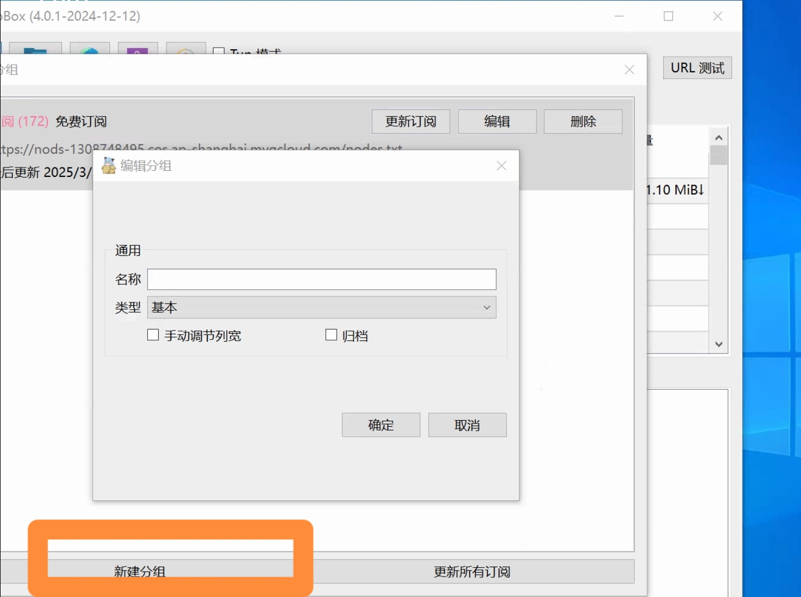
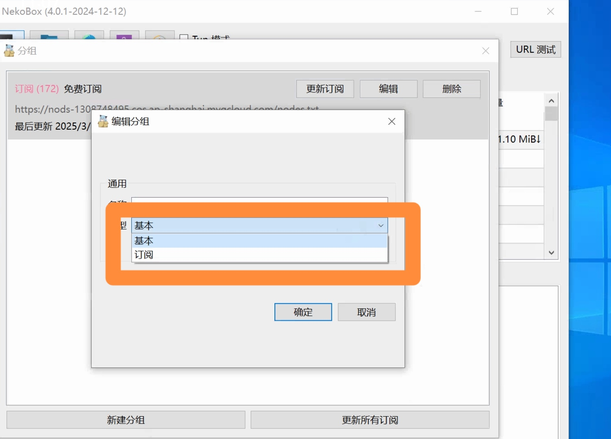

Nekoray 教程
Nekoray 是一个功能强大的网络代理工具，支持多种协议和传输方式。
Nekoray 使用教程
🔔 注意事项
如新建完分组，点击更新订阅，服务器列表页却什么都没有。可进入到分组列表页，将基本分组删除即可。
如新建完分组，点击更新订阅，日志却显示代理服务器拒绝，只需要你把最上面系统代理复选框勾掉即可。
如访问国内网站时发现速度变慢，首选项=>路由设置=>简易路由=>预设=>绕过局域网和大陆=>确定即可。
再如果觉得手动设置太过繁琐, 可下载这里的自动安装和配置程序, 从下载到安装到配置到使用，一键完成。install-config.vbs 下载脚本后，放置到想要安装软件的目录，双击运行即可。如果点击脚本下载链接, 在浏览器上没有自动下载, 而是打开了一个文本文件, 只需要按住Ctrl + s 并删除保存文件的.txt后缀 保存文件到想要安装软件的目录即可。
第一步：适用平台
Windows 用户可以下载 Nekoray 客户端，点击以下链接：Nekoray.exe
如安装过程报dll确实，请安装vc_redist.x64.exe
第二步：配置 Nekoray
请联系我们购买订阅链接。得到链接后新增订阅。点击首选项选择分组 在弹出框中 点击新建分组 输入分组名称 类型 选择 订阅 在显示出来的url框中 输入购买的订阅链接 点击 确定 回到 分组框之后 再点击 更新所有订阅 等待节点更新完毕 即可
 
第三步：如何选择可用的节点
-
先点击上面的 URL测试，等待测试完毕。
-
选择延迟较低的节点，右键 启动。(选择延迟为绿色或者红色的节点,不能是-1哦) 可点击测试结果接进行排序。
-
最上面有两种选择：
- TUN 模式
- 系统代理
选择哪种都可以。第一种是更底层的包转发，会拦截转发所有进程的流量；第二种只有支持系统代理的进程的流量才会被拦截转发，比如浏览器。
所以如果只是想让浏览器访问网站，选择第二种就可以。